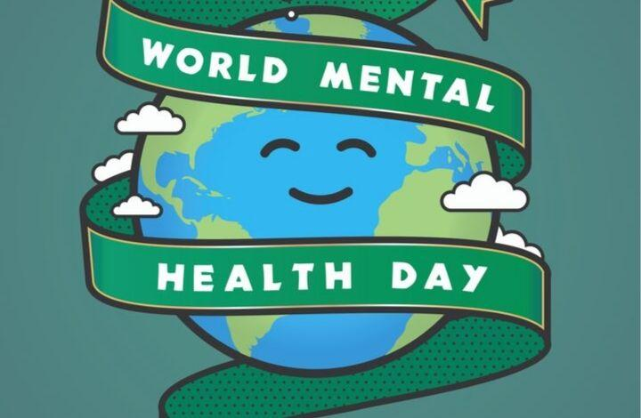
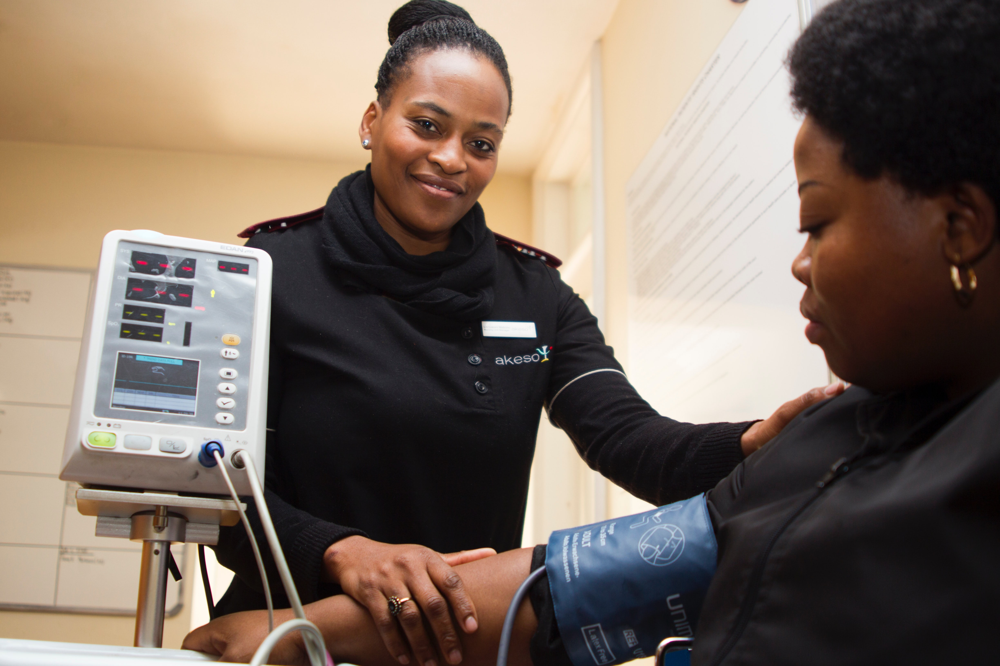
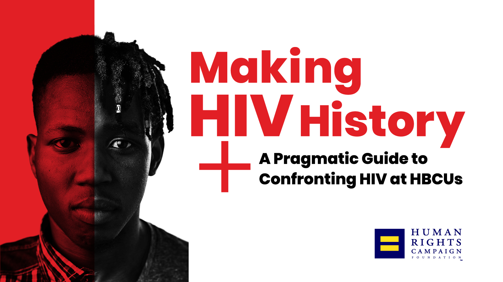
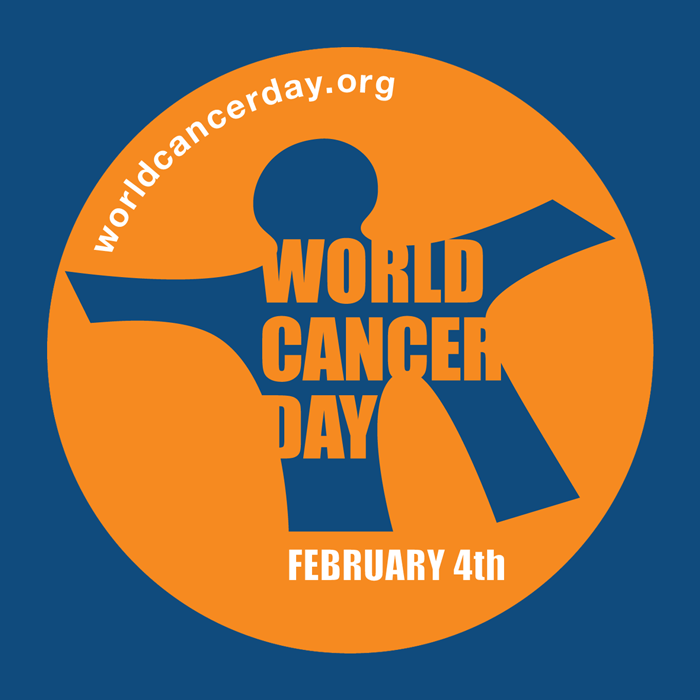

Disease
Disease awareness campaigns allow pharmaceutical companies to share educational information about a disease state to ultimately lead to improved patient care. ExL’s Disease Awareness Campaigns Forum is the industry’s only conference dedicated
to strategies for building educational campaigns that resonate with patient and providers.
Heart Run
 The Mater Heart Run is an annually held initiative in the efforts to raise awareness and donations to support children with heart conditions from families that cannot afford the cost of cardiac surgery. Every year, Syngenta donates and participates
towards this noble cause. “The program has grown from 20 open hearts annually to 200 cases a year” says Dr. Christine Jowi, the lead Paediatric Cardiologist, Mater Hospital.
The Mater Heart Run is an annually held initiative in the efforts to raise awareness and donations to support children with heart conditions from families that cannot afford the cost of cardiac surgery. Every year, Syngenta donates and participates
towards this noble cause. “The program has grown from 20 open hearts annually to 200 cases a year” says Dr. Christine Jowi, the lead Paediatric Cardiologist, Mater Hospital.
Diabetes Day
 In 2020, the World Diabetes Day campaign focuses on promoting the role of nurses in the prevention and management of diabetes. Learn more about the theme and key messages and view the resources available.
In 2020, the World Diabetes Day campaign focuses on promoting the role of nurses in the prevention and management of diabetes. Learn more about the theme and key messages and view the resources available.
Eye Run
,
 The success is due in part to the program’s multi-faceted public awareness campaign which includes television, radio, online and social media communications that focus on a variety of eye health and wellness issues aided by the eye exam– from
eye disease and children’s vision and visual fatigue and overall health. Ads encourage consumers to visit ThinkAboutYourEyes.com to locate an eyecare professional through an available tool on the website and ultimately to schedule an appointment.
Consumers can also connect with the Think About Your Eyes campaign through its social media channels on Facebook, Twitter, YouTube and Flickr – all of which are accessible from the campaign website.
The success is due in part to the program’s multi-faceted public awareness campaign which includes television, radio, online and social media communications that focus on a variety of eye health and wellness issues aided by the eye exam– from
eye disease and children’s vision and visual fatigue and overall health. Ads encourage consumers to visit ThinkAboutYourEyes.com to locate an eyecare professional through an available tool on the website and ultimately to schedule an appointment.
Consumers can also connect with the Think About Your Eyes campaign through its social media channels on Facebook, Twitter, YouTube and Flickr – all of which are accessible from the campaign website.
Mental Run

EU-funded “Mental Health and Human Rights (MHHR): Promoting rights of people with mental disorders and psychosocial disabilities (PwMD) in Georgia” project implemented a campaign to raise awareness of the population on the needs of people with
mental health issues. It was to once again remind the public about the rights of people with mental health problems.In support of the campaign, banners, stickers for participants, medals for winners in different categories, flyers, certificates
for winners and Participants were designed and printed out. 4 uniforms were designed with symbols – indicating that 1 in 4 people will experience mental illness at least once in their lifetime. Two events were organized in the frame of the
Campaign “Run for mental Health” – one in Tbilisi and in Batumi.
Community Health

Community health is a medical specialty that focuses on the physical and mental well-being of the people in a specific geographic region. This important subsection of public health includes initiatives to help community members maintain and improve
their health, prevent the spread of infectious diseases and prepare for natural disasters. “Working at the community level promotes healthy living, helps prevent chronic diseases and brings the greatest health benefits to the greatest number of
people in need,” reports the Centers for Disease Control and Prevention (CDC).1 Strong community health requires residents to look beyond themselves and take “collective responsibility,” says Caleb Backe, health and wellness expert at Maple Holistics.
“It’s not just about the healthcare system, but focuses on the importance of leading a generally healthy lifestyle in order to protect the community as a whole.” Community health is inextricably tied to individual wellness. “Good community health
equates to healthy people, as a community is the ecosystem or environment in which people live,” says Thomas G. Bognanno, president and CEO of Community Health Charities. “It’s difficult to be healthy personally if your community is unhealthy.”
HIV/AIDs

HIV, or Human Immunodeficiency Virus, weakens your immune system by destroying important cells that fight disease and infection. Over time, HIV can destroy so many of your T-cells or CD4 cells, a key part of your immune system, that your body can’t
fight infections and disease anymore. When this happens, HIV infection can lead to AIDS. AIDS, or Acquired Immunodeficiency Syndrome, is a complex illness with a wide range of complications and symptoms. AIDS is the final stage of HIV. When individuals
reach this stage, they are at high risk for opportunistic infections due to their badly damaged immune system.
Cancer

Cancer is a term used to describe a disease in which abnormal cells grow out of control. There are over 100 diseases that classify as cancer. Cancer cells can invade, or grow into, other tissues and form tumors. Cancer may spread, but it is always
named for the place where it started. For example, cancer that starts in the breast is called breast cancer. Cancer can be a complex topic for some to understand.